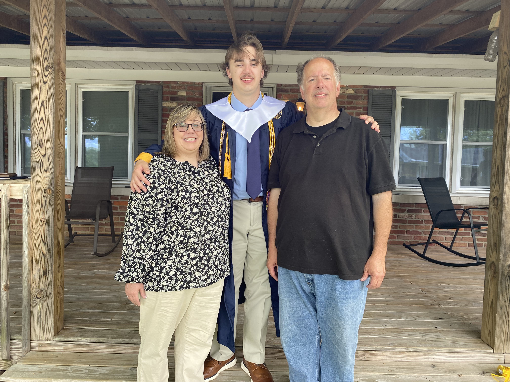
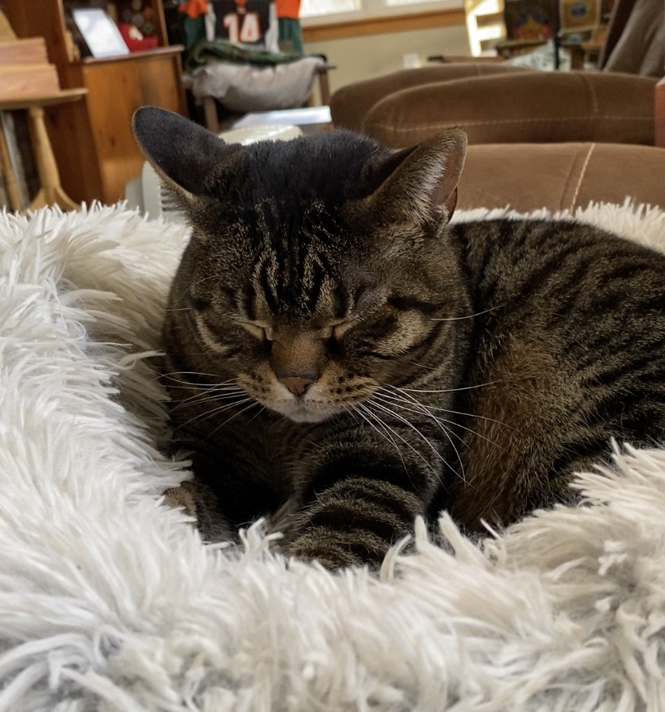
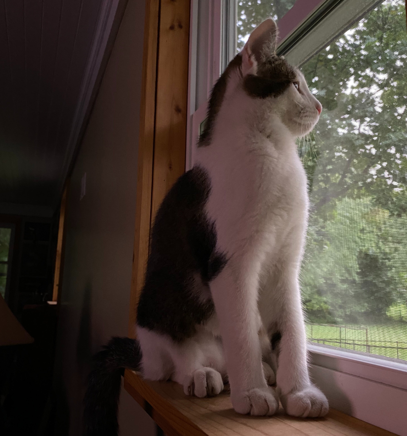
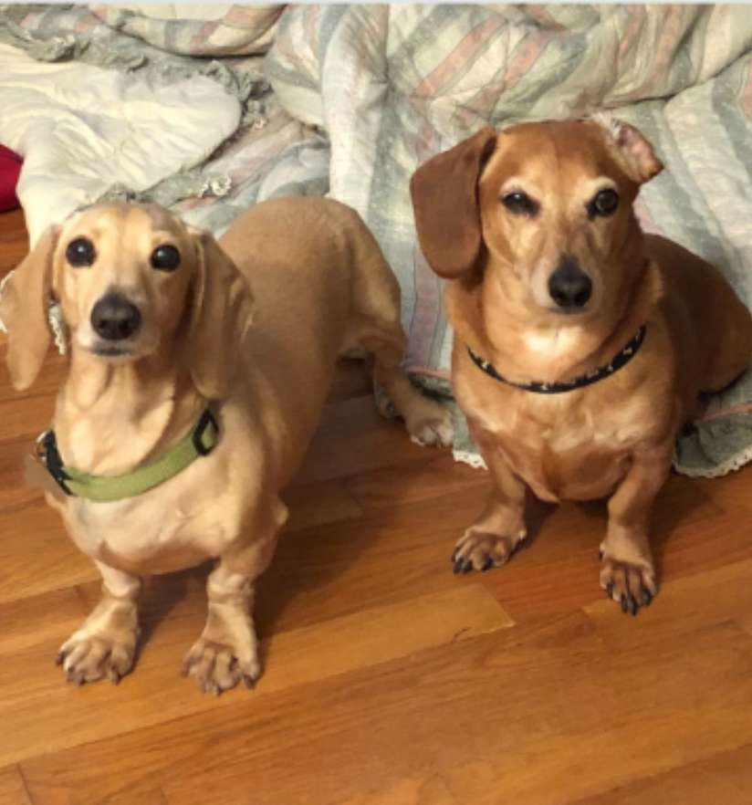

I live in Frankfort, Kentucky, with my husband (Keith) and our son (Pete). We have two cats (Lee and Dink) and two dachshunds (Sadie and Harrison).
We took this picture at Pete's graduation party. He is going to college at Morehead State and is majoring in history. He wants to become a social studies teacher.
|  Lee is 8 years old. He likes to sleep on in the blankets on Pete's bed so that he can hide from Dink! He likes to sit watch TV with us at night, and he sits on my husband's chest. |
 Dink is 2 years old. He likes to play fetch with straws and Nerf darts!When we brought him home from the Humane Society, he ran off with Pete's retainer! We found it 9 months later...behind a bookcase! |
 Sadie is about 12 years old. She is a rescue, so she gets scared when new people are around. Harrison is 13 years old, and we call him the "Old Man." He loves to burrow under blankets. |